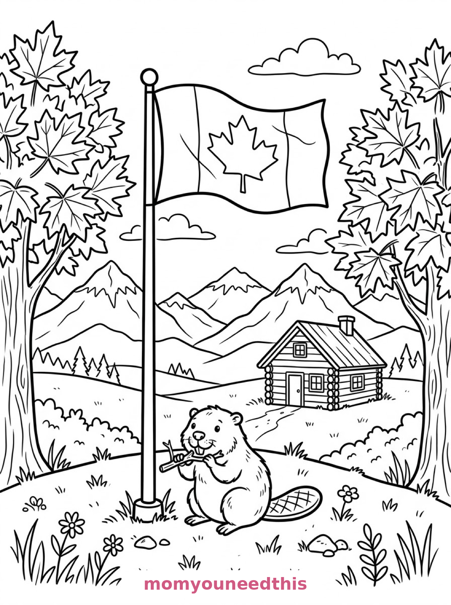
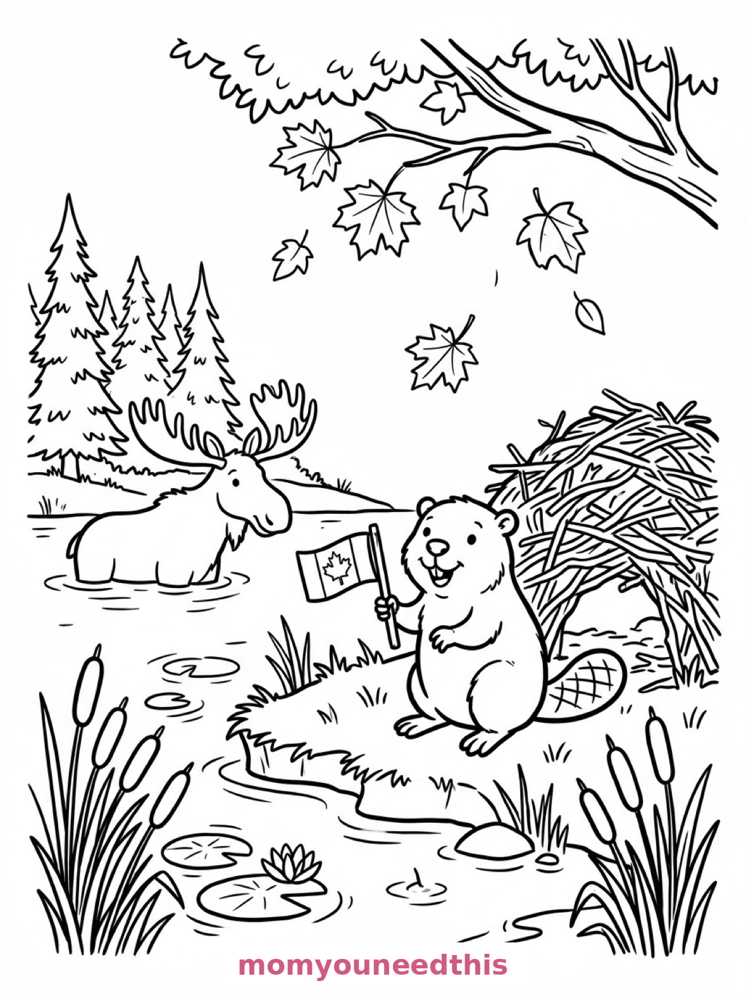
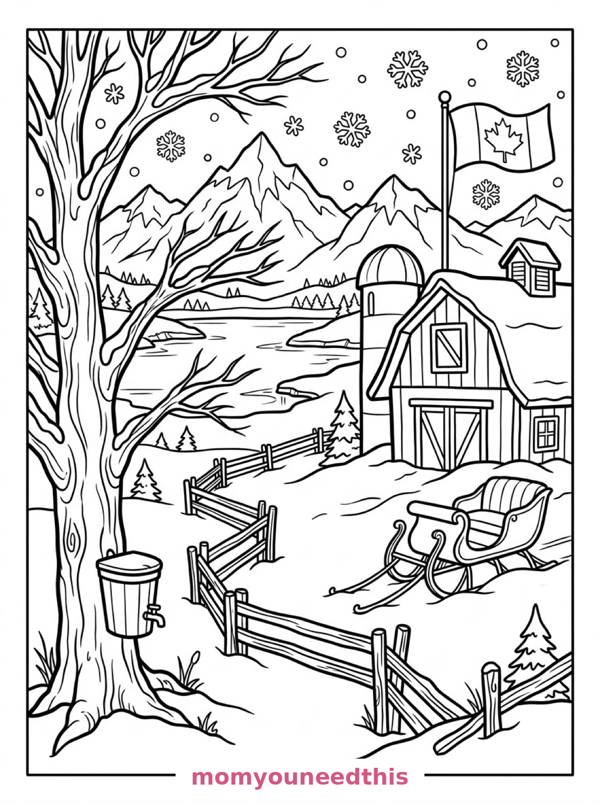

Free Canada Flag Coloring Pages Flagpole, Beaver Pond & Barn Printables
These free canada flag coloring pages fly the maple leaf through three Canadian scenes — a flag on a hilltop with a beaver, a beaver holding its own little flag by a pond, and a flag over a snowy barn. Download the set below, print at home on letter-size paper, and let the coloring fun begin. No signup needed.
Last updated: October 23, 2026
Quick Answer
Yes — this page has three free printable canada flag coloring pages: a large Canadian flag waving from a tall flagpole with a beaver below, a beaver holding a small flag beside its lodge in a pond, and a flag flying from a barn on a snowy northern farm. Bold outlines and big spaces, made for little hands. Download, print on letter-size paper, and hand over the crayons — no signup, no cost.
At a Glance
- Ages: 3–8
- Pages: 3 free printables
- Format: Print at home, letter size
- Cost: Free, no signup
- Supplies: Crayons or markers
- Time: 10–20 minutes
🇨🇦 Canadian Flag on the Hill Coloring Page

🎨 Download Your Free Flag on the Hill Coloring Page
A large Canadian flag with its maple leaf emblem waves from a tall flagpole on a grassy hill, a beaver sits at the base gnawing a stick, maple trees frame the scene, and a log cabin and snowcapped peaks fill the background — bold outlines, big spaces, zero signup.
⬇️ Download Free Flag Hill Page 🖨️ Print Flag Hill Page🎁 Free printable for preschoolers & kids
🦫 Beaver with a Flag by the Pond Coloring Page

🎨 Download Your Free Beaver Flag Coloring Page
A beaver stands on its hind legs holding a small Canadian flag on a wooden pole beside a beaver lodge of woven sticks in a pond, with lily pads, cattails, a moose wading behind and maple leaves drifting from a branch — bold outlines, big spaces, zero signup.
⬇️ Download Free Beaver Flag Page 🖨️ Print Beaver Flag Page🎁 Free printable for preschoolers & kids
❄️ Flag at the Snowy Barn Coloring Page

🎨 Download Your Free Barn Flag Coloring Page
A Canadian flag flies from the pole of a storybook barn on a northern farm, with a maple tree holding a wooden sap bucket, a sleigh resting in the snow, fence rails zigzagging toward a frozen lake and white mountains under falling snowflakes — bold outlines, big spaces, zero signup.
⬇️ Download Free Barn Flag Page 🖨️ Print Barn Flag Page🎁 Free printable for preschoolers & kids
More Coloring Pages
Tap any picture to open its theme page and download the free printable.


🇨🇦 How To Use This Page
- Browse the three designs and pick the Canadian scene your child will love most.
- Tap download or print under that design — the file opens full-size, ready for letter-size paper.
- Print a couple of copies of the hilltop flag — it is the quickest page in the set and perfect for Canada Day.
- Color together with crayons or markers and keep the red crayon handy.
🍁 Why Kids Love Canada Flag Coloring Pages
The Canadian flag is one of the friendliest flags in the world to color: two red bands, one white square, one big maple leaf. These pages wrap that simple, bold flag in three full Canadian scenes — beavers, maple trees, a moose, a frozen lake — so the flag is the hero of a story, not just a rectangle to fill.
They are also a gentle geography lesson that never feels like one. The beaver is Canada's national animal, the sap bucket is how maple syrup starts, and the moose is exactly where a moose would be. Kids absorb the country while they color it.
🇨🇦 Meet the Three Canadian Scenes on This Page
The flag on the hill. A large Canadian flag with its maple leaf emblem waves from a tall flagpole on a grassy hill, a beaver sitting upright at the base of the pole gnawing a stick, maple trees with broad lobed leaves on either side, a log cabin in the middle distance, and layered mountain peaks with snowcaps across the background. It is the boldest page in the set — the flag is huge.
The beaver with the little flag. A beaver stands on its hind legs holding a small Canadian flag on a wooden pole beside a beaver lodge of woven sticks in a pond, lily pads and cattails around the shore, a moose wading in the water behind, tall pine trees along the bank, and maple leaves drifting down from an overhanging branch. It is the sweetest page in the set — the flag is small, the beaver is proud, and the moose steals every scene it is in.
The flag at the barn. A Canadian flag flies from the pole of a storybook barn on a northern farm, a maple tree holding a wooden sap bucket, a sleigh resting in the snow, fence rails zigzagging toward a frozen lake, and white mountains under large falling snowflakes. It is the wintriest page in the set — Canada in one snowy farmyard.
✏️ Canada Flag Coloring Tips
- Red bands, red leaf, white middle. The real flag's recipe is simple: color the two side bands and the maple leaf red, and leave the center panel white — kids feel very official getting it right.
- Try the maple leaves three ways. Green in summer (hill page), drifting red and orange in fall (pond page), and the sap-bucket tree can be any season your child wants.
- Leave the snow white. On the barn page, white snow and mountains against a colored sky and a red flag is the whole picture working.
- Color the beaver proudly. Save your best brown for the beaver — it is the heart of the pond page.
🇨🇦 Coloring Pages for Different Ages
For ages 3 to 4, start with the flag on the hill. One enormous flag, one beaver and a few big trees are all a little colorer needs — and the flag itself is a three-color job.
For ages 5 to 6, the beaver pond is the sweet spot. The beaver and its little flag are bold shapes, and the lodge, lily pads and moose add a real scene to build.
For ages 7 to 8, hand over the snowy barn. The fence rails, the lake, the sap bucket and the snowflakes reward careful coloring.
🍁 More Canada Fun After Coloring
Hang the hilltop flag page for Canada Day: it is sized and shaped like a real poster, and a child's hand-colored flag in the window is better than any store-bought decoration.
For more northern wildlife, the owl coloring pages perch in the same forests — and the winter coloring pages keep the snowy mood going with a sledding hill and a skating pond.
🔗 More Free Printables You’ll Love
- Free Fall Coloring Pages Leaves, pumpkins and harvest scenes for autumn afternoons.
- Free Winter Coloring Pages A snowman, a sledding hill and an ice-skating pond to color.
- Free Animal Coloring Pages Free printable animal coloring pages for little learners.
- All Free Coloring Pages Browse every free coloring page on the site, organized by theme.
❓ Canada Flag Coloring Pages FAQ
Are these canada flag coloring pages really free?
Yes — all three designs on this page are free original printables from MomYouNeedThis. Download them, print them at home, and color — no signup and no cost.
What ages are these coloring pages best for?
Kids ages 3 to 8 get the most from this set. The hilltop flag is the gentlest start for younger children, while the beaver pond and snowy barn scenes have the detail older kids enjoy.
How do I print a coloring page?
Tap the download button under the design you want, then print the file on regular letter-size paper. The print button opens the full-size page in a new tab if you prefer to print from there.
What colors is the Canadian flag?
Red and white: two red bands on the sides, a white square in the middle, and a red maple leaf in the center. On these pages the outline does the layout — kids just add red to the bands and the leaf and leave the middle white.
Can I make a Canada Day coloring book from these pages?
Yes — print all three designs, stack them in order, and staple along the left edge. Add a cover sheet with your child's name for a finished homemade Canada flag coloring book.